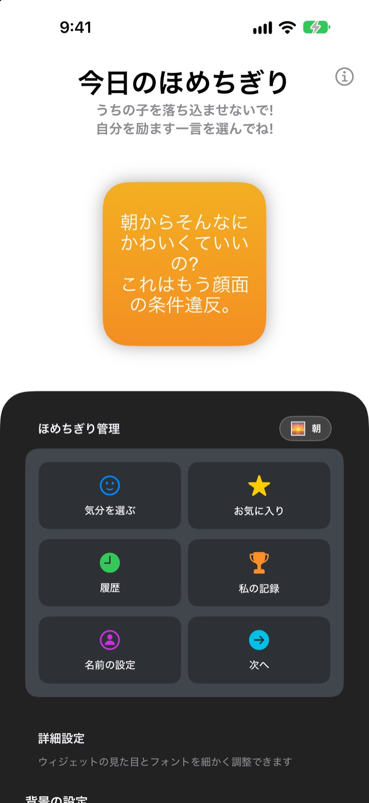
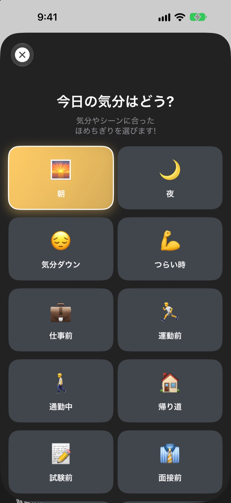
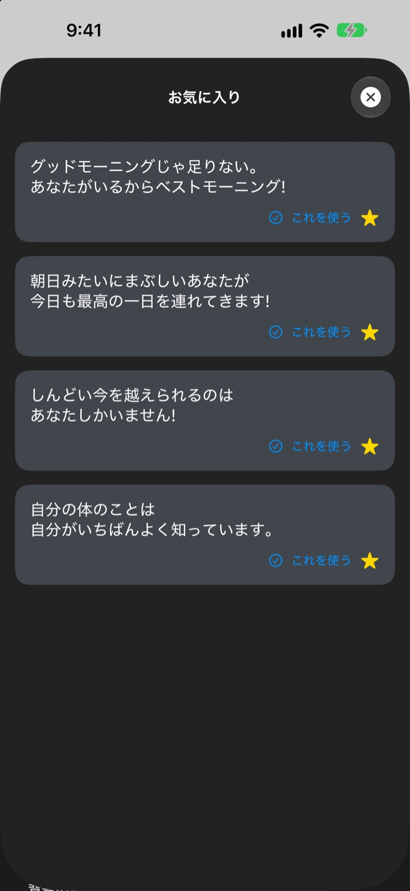
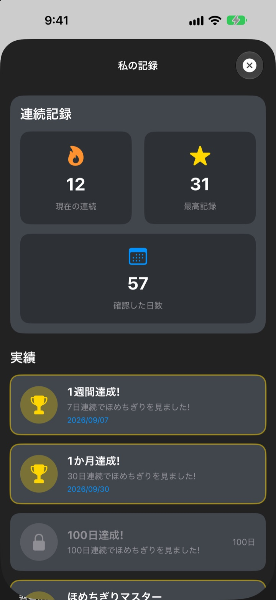

スマホを見るたび、
熱烈なファンが待っている
今日のほめちぎりは、ちょっと大げさすぎるくらいにほめてくれるウィジェット。朝には朝のひと言、面接前には面接前のひと言。フォントや色、背景も好きなように変えられます。
一度の購入ですべての機能が使えます。サブスクも広告もありません。

ほめ言葉をもらってみる
気分を選ぶと、その気分のひと言がウィジェットに表示されます。「次へ」を押すと、281の中からランダムに出てきます。
自分にいちばん厳しいのは、自分かもしれません
通勤中も、面接前も、帰り道も、頭の中はダメ出しばかり。今日のほめちぎりは、1日に何度もホーム画面から、やりすぎなくらい味方してくれます。思わずふっと笑った瞬間、自信が少し戻ってきます。
今の気分にぴったりのひと言を
朝、通勤中、つらい時、面接前、デート前 など14の気分やシーンから選ぶと、合ったひと言がすぐウィジェットに表示されます。迷ったら ランダム もあります。

気に入ったひと言は取っておける
星をタップしてお気に入りに保存。これまでのひと言は履歴で見返せます。これを使う をタップすれば、そのままウィジェットに表示されます。

毎日続けるほど記録が増える
ひと言を見た日が続くと連続記録が伸びていきます。7日、30日、100日連続や、合計50日、100日を達成するたびに実績が解除されます。

はじめかたは3ステップ
- 1
気分を選ぶ
気分を選ぶから今の気分に合うものをタップ。 - 2
ウィジェットを整える
詳細設定でフォント、文字色、背景、更新間隔を選びます。
- 3
ホーム画面に置く
ホーム画面を長押しして + をタップし、今日のほめちぎりを追加します。
ウィジェットはここまで変えられます
- フォント
- Futura、Georgia、Marker Feltなど13種類
- 文字色
- 好きな色を自由に
- 背景
- 2色のグラデーション、またはアプリ内の背景写真
- 配置
- 左寄せ、中央、右寄せ
- 行間
- 行の間隔を広げたり狭めたり
- 更新間隔
- 5分、15分、30分ごとに新しいひと言
ウィジェットのサイズは、ホーム画面に追加するときに選びます。
一度買えば、それでおしまい
アプリ本体
- 14の気分に281のひと言
- カスタマイズできるホーム画面ウィジェット
- お気に入りと履歴
- 連続記録と実績
開発者を応援する
- 小・中・大の3種類のチップから選べます
- 機能を解放する課金ではありません。感謝の気持ちを届ける場所です
気が向いたときだけどうぞ。
サブスクも追加課金も広告もありません。
よくある質問
ウィジェットはどうやって追加しますか？
ホーム画面の空いているところを長押しして編集モードにし、上の + をタップ。今日のほめちぎりを探して、好きなサイズを選んで追加してください。
次のひと言はどうやって決まるの？
気分を選ぶと、その気分のひと言がすぐウィジェットに表示されます。その後は、選んだ更新間隔ごとに281の中からランダムで表示されます。アプリで 次へ を押して自分で送ることもできます。
ウィジェットのフォントや更新間隔は変えられますか？
はい。詳細設定でフォント、文字色、背景、配置、行間、更新間隔を変えられます。更新間隔は5分、15分、30分から選べます。
ウィジェットがすぐに変わりません。
ウィジェットをいつ描き直すかはiOSが決めるため、選んだ間隔より少し遅れることがあります。アプリを開いて閉じると、すぐに反映されます。
連続記録はどう増えますか？
ひと言を見た日が1日ずつ続くと、連続記録が伸びます。私の記録 で現在の連続日数、最高記録、合計日数と実績を確認できます。
お気に入りや履歴が消えてしまいました。
すべての情報は端末の中だけに保存されるため、アプリを削除したり機種変更したりすると引き継がれません。削除していないのに消えた場合は、メールでお知らせください。
私の情報がどこかに送られますか？
いいえ。個人情報は集めていません。お気に入りや履歴は端末の中だけにあります。
不具合の報告や要望はどこへ？
アプリの 開発者に問い合わせ からそのまま送れます。メールやInstagramのDM（@lee25_ios）でも受け付けています。確認しだいお返事します。
ご質問やご意見は leeo@kakao.com までお寄せください。